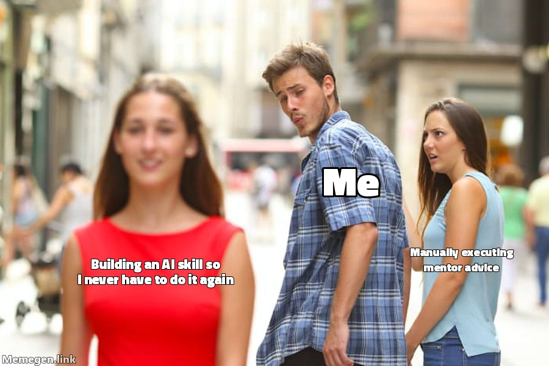

Let's build your
Execution Engine.
I wrote a full 3-part teardown on how to build the Multi-LLM Harness and rank the best browser agents available today.
Read the Playbook at why57.com
(Link in the comments)
The gap between getting good advice and doing the work is where businesses stall out.
Stop taking notes and start capturing Execution Data.

Your mentor calls should immediately become executable skills that drive a browser.
Don't ask the AI for a summary. Force it to build a machine-readable Standard Operating Procedure.
The AI stops talking to you like a human and starts talking to your browser like an engineer.
Why harden the skill instead of just passing the raw transcript every time?
87% reduction in API costs.
I wrote a full 3-part teardown on how to build the Multi-LLM Harness and rank the best browser agents available today.
(Link in the comments)